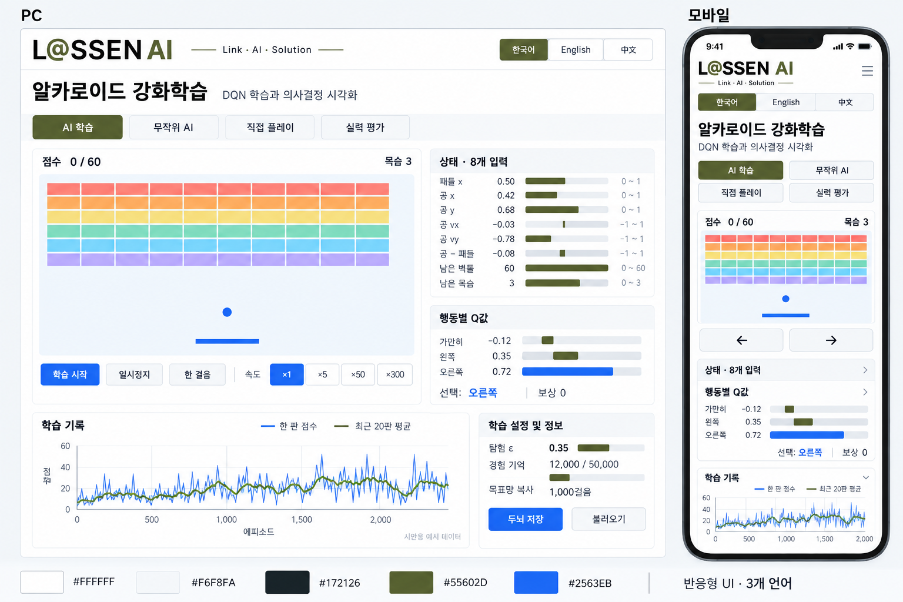

2026년 9월 30일 · 승인용 기획 · v2L@SSEN AI · 알카노이드 강화학습
참고 사이트의 핵심 배치를 유지하면서 밝은 색감으로 만드는, 브라우저 안에서 실제로 학습하는 DQN 체험 프로그램.
수정 확정안 · 2026-09-30
- 브랜드: 제공한 현판 이미지의 L@SSEN 로고와 검정·올리브색을 반영하며, L@SSEN AI를 명시합니다. 서비스명은 사용자 지정대로 알카노이드 강화학습입니다.
- 톤: 흰색·밝은 회색 바탕, 짙은 글자, 올리브색 브랜드와 파란 기능 강조. 장난감 같은 광택과 두툼한 요소를 없앤 차분한 학습 도구입니다.
- 게임: 참고 사이트의 실제 캔버스를 다시 확인한 결과 10열 × 6행 = 60개입니다. 새 게임에서도 동일하게 배치합니다. 논리 게임판 300×400 기준 벽돌 높이 약 8px, 간격 2px, BAR 높이 약 5px을 시작점으로 조정합니다. 시각 두께 조정에 맞춰 충돌 영역도 일치시킵니다.
- 언어: 한국어 / English / 中文 버튼. 제목·모드·버튼·상태·그래프·설명·오류·접근성 레이블까지 전환합니다. 중국어는 간체를 기본안으로 합니다. 브랜드 L@SSEN AI는 공통 유지하고 선택 언어를 로컬 저장합니다.
- 언어별 서비스 제목: 한국어 ‘알카노이드 강화학습’, 영어 ‘Arkanoid Reinforcement Learning’, 중국어 ‘打砖块强化学习’. 한국어 표기는 요청한 철자를 유지합니다.
- 반응형: PC는 게임과 AI 패널 병렬 배치, 태블릿은 폭에 따라 패널을 재배치, 휴대폰은 단일 열과 2×2 모드 선택. 언어 버튼은 모바일에도 항상 표시하며 좌우 터치 버튼은 최소 44px입니다. 번역으로 문구가 길어져도 줄바꿈하고 가로 스크롤을 만들지 않습니다.
1. 전체 화면 시안

PC에서는 게임을 왼쪽에 크게, 상태와 Q값을 오른쪽에 배치합니다. 아래에는 학습 기록과 DQN의 세 가지 원리를 둡니다. 모바일에서는 게임 → 터치 조작 → AI 판단 → 학습 기록 순으로 쌓고, 상태 상세와 설명은 접을 수 있게 합니다.
게임판까지 밝게 유지합니다. 파란 공과 패들로 위치를 뚜렷하게 표시하고, 낮은 대비의 색은 벽돌과 배경에만 사용합니다. 한글 산세리프, 읽기 쉬운 숫자, 최소 44px 터치 영역, 키보드 포커스 표시를 적용합니다.
시안 생성: 내장 ImageGen. 제작 프롬프트 요약: 제공된 로고를 반영한 L@SSEN AI 알카노이드 강화학습 화면, 60개 얇은 벽돌과 얇은 BAR, 3개 언어 버튼, PC와 모바일 배치, 검정·올리브·파란색 팔레트. 생성 그림은 색감과 배치 승인용입니다. 생성 그림의 세부 수치와 문구는 시각적 예시입니다. 구현에서는 아래 상태 8개, 60개 벽돌, 점수 0~60, 목표망 1,000걸음 기준을 적용합니다.
2. 참고 사이트를 실제로 사용하며 확인한 점
AI CITY BUILDERS DQN에서 시작, ×300 가속, 직접 플레이와 좌우 키 입력, 무작위 AI, 학습한 두뇌 평가 모드를 사용했습니다. PC와 폭 390px 모바일 화면도 확인했습니다.
- 모드 4개: 학습 / 무작위 / 직접 플레이 / 탐험 없이 평가.
- 게임 옆에 상태 8개와 행동 3개의 Q값, 선택 행동, 즉시 보상을 표시합니다.
- 탐험률 ε, 리플레이 버퍼, 목표 네트워크 복사 주기, 학습 오차와 최근 20판 평균을 보여줍니다.
- ×1·×5·×50·×300, 두뇌 초기화·저장·불러오기, 저속 행동 로그와 벨만 방정식 설명이 있습니다.
- 직접 관찰한 학습 실행에서 27,067걸음 / 52판 / 최근 평균 4.1이 표시됐고, 이후 36,067걸음 / 65판 / 최근 평균 4.5가 표시됐습니다. 한 번의 체험 결과이며 성능 보장이나 공식 벤치마크가 아닙니다.
유지할 것은 교육 흐름과 정보 배치입니다. 바꿀 것은 밝은 게임판, 간결한 한글 버튼, 모바일 터치 조작, 학습과 평가의 분리, 재현 가능한 비교입니다. 원본 소스·브랜드·학습 모델을 복사하는 방식은 사용하지 않습니다.
3. 노트북을 반영하는 방법
참조: notebook/강화학습_DQN_벽돌깨기.ipynb의 전체 셀을 확인했습니다. 실제 학습 대상은 ALE/Breakout-v5입니다. 앞부분의 DonkeyKong 셀은 탐색용 별도 예시이며 웹 게임 설계에는 포함하지 않습니다.
노트북의 아타리 DQN
84×84 흑백 화면 4장, 프레임 건너뛰기 4, 합성곱 3층 + 512 노드, 가만히·발사·오른쪽·왼쪽 4개 행동. PyTorch와 Gymnasium을 사용합니다.
γ=0.99, Adam 학습률 0.0001, 배치 32, 목표 네트워크 10,000걸음마다 복사, 버퍼 100,000, 학습 전 수집 20,000걸음, ε 1.0→0.05를 100,000걸음에 걸쳐 감소시킵니다.
제안하는 브라우저 DQN
참고 사이트처럼 미니 벽돌깨기와 상태 숫자 8개를 사용합니다. 입력 8 → 은닉 64 → 은닉 64 → 출력 3의 작은 신경망을 제안합니다. 행동은 가만히·왼쪽·오른쪽이며 공은 자동 발사합니다.
탐험·경험 리플레이·목표 네트워크·벨만 목표값·Huber loss 등 학습 원리는 유지합니다. 아타리 화면 기반 모델과 게임/입출력이 달라 노트북의 .pt 가중치를 그대로 불러올 수는 없습니다.
4. 1차 구현 범위
- 게임: 고정된 논리 좌표, 10열×6행 벽돌 60개, 목숨 3개, 벽·패들·벽돌 충돌, 전부 깨거나 목숨이 소진되면 에피소드 종료. 벽돌 하나를 깨면 점수와 보상 +1, 목숨 상실은 학습용 보상 −1. 화면 점수는 깨뜨린 벽돌 수로 유지합니다.
- 모드: 학습은 가중치를 갱신하고, 무작위·직접 플레이·평가는 갱신하지 않습니다. 평가는 ε=0, 정해진 동일 시드 묶음 10판으로 평균·최고·표준편차·클리어율을 표시합니다. 무작위 AI도 같은 조건으로 비교합니다.
- 관찰: 패들 x, 공 x/y, 공 vx/vy, 공−패들 거리, 남은 벽돌 비율, 목숨 비율을 정규화해서 표시합니다. 음수 Q값도 표시하고, 가장 큰 Q와 실제 선택 행동을 별도로 강조하여 탐험을 설명합니다.
- 제어: 시작·일시정지·한 걸음, 속도 ×1·×5·×50·×300. 배속은 목표치이며 기기 성능에 따라 실제 처리량을 표시합니다. 수동 플레이는 ×1, 모바일은 낮은 기본 배속으로 시작합니다.
- 기록: 한 판 점수와 최근 20판 평균, 학습 걸음, 에피소드, ε, loss, 버퍼 사용량, 목표망 복사 횟수. 처음에는 실제로 완료한 판만 표시합니다. 저속 로그는 최근 항목만 보관합니다.
- 실험: 접힌 고급 설정에 학습률·γ·탐험 감소 기간·버퍼 크기·목표망 주기를 제공합니다. 상태/네트워크 구조를 바꾸는 설정은 새 실험으로 시작합니다.
- 저장: 버전·게임 규칙·상태/행동 순서·네트워크 구조·가중치·학습 설정을 포함한 자체 brain.json 다운로드/불러오기. 원본 사이트 brain.json 호환성은 확인되지 않았으므로 1차 범위에 포함하지 않습니다. 저장 파일은 추론·학습 재개용이며 리플레이 버퍼와 최적화 상태를 포함한 완전한 실행 복제는 별도 기능입니다.
- 모바일: 가로 스크롤 없는 반응형, 길게 누르는 좌우 버튼과 패들 드래그, 화면 비율 유지. 화면이 숨겨지면 일시정지하고 복귀 시 상태를 안내합니다.
- 설명: 상태 → 판단 → 행동 → 보상 → 복습 흐름, 벨만 식
y = r + γ(1−done)max Q_target(s′,a′), 노트북과 웹 환경의 차이, Colab 연결.
5. 실제 학습 구조와 기본값
TensorFlow.js로 온라인·목표 네트워크를 구성하고, 각 경험을 (s,a,r,s′,done)으로 저장합니다. 노트북의 다음 칸 상태 참조 방식을 그대로 옮기지 않고 다음 상태와 종료 정보를 명시적으로 저장하여 리셋·잘림·버퍼 순환 경계의 혼동을 줄입니다. 학습은 예고된 점수 곡선이나 공 추적 규칙으로 대체하지 않습니다.
초기 제안: γ 0.99, 학습률 0.001, 배치 32, 버퍼 50,000, 수집 2,000걸음 후 학습 시작, 4걸음마다 갱신, 1,000걸음마다 목표망 복사, ε 1.0→0.05를 80,000걸음에 걸쳐 감소. 이 값은 미니 게임을 위한 출발점이며 구현 후 다중 시드 평가로 조정합니다. 개선은 흔들릴 수 있고 특정 시간 안에 고수가 된다고 보장하지 않습니다.
6. 서버 없이 GitHub에서 실행
제안 기술은 TypeScript + Vite, Canvas 2D 게임, TensorFlow.js, 브라우저 저장소입니다. 빌드된 HTML/CSS/JS와 라이브러리를 GitHub Pages에 올립니다. 접속한 PC·휴대폰의 브라우저가 게임·추론·학습을 모두 수행하므로 운영용 Python 서버나 API 키가 필요하지 않습니다.
학습 루프는 작은 작업 단위로 나눠 화면에 제어권을 반환하고, 실제 기기 확인 후 Worker와 WASM/WebGL 백엔드를 선택합니다. 미니 신경망에서는 WASM도 검토합니다. 외부 CDN에 의존하지 않도록 실행 라이브러리를 빌드에 포함합니다. 프로젝트 하위 URL에 맞춘 상대 경로/base 설정과 GitHub Actions 빌드·배포를 준비합니다.
기기 간 자동 동기화는 없으며 brain.json 파일을 옮겨 같은 두뇌를 사용합니다. 최초 접속은 인터넷이 필요합니다. 완전 오프라인 실행, 온라인 순위표, 계정, 서버 채점은 이후 별도 범위입니다. 미리 학습한 두뇌를 제공한다면 이 미니 게임에서 직접 학습·검증한 모델만 사용하고 평가 결과를 함께 공개합니다.
7. 승인 후 진행 순서와 완료 기준
- 밝은 화면과 반응형 게임, PC/터치 조작을 구현합니다.
- 실제 DQN·4개 모드·관찰 패널·저장/불러오기를 연결합니다.
- 설명과 실험 설정을 추가하고 다중 시드 학습/평가로 동작을 확인합니다.
- 모바일 기기 또는 사용 가능한 모바일 브라우저 환경과 PC에서 확인하고 GitHub Pages용 빌드를 준비합니다. 저장소 업로드·공개 배포는 그 단계에서 요청 범위를 확인합니다.
검증 기준: 충돌·종료·난수 시드가 재현됨, Bellman 목표값의 done 처리가 맞음, 평가 중 가중치가 바뀌지 않음, 저장 전후 같은 상태의 Q값이 일치함, 장시간 학습 시 메모리가 무한 증가하지 않음, 모바일 입력과 GitHub 프로젝트 경로에서 정상 실행됨. 다중 시드로 무작위 AI 대비 점수 변화를 측정해 실제 결과를 보고합니다.
8. 승인 대상
자료